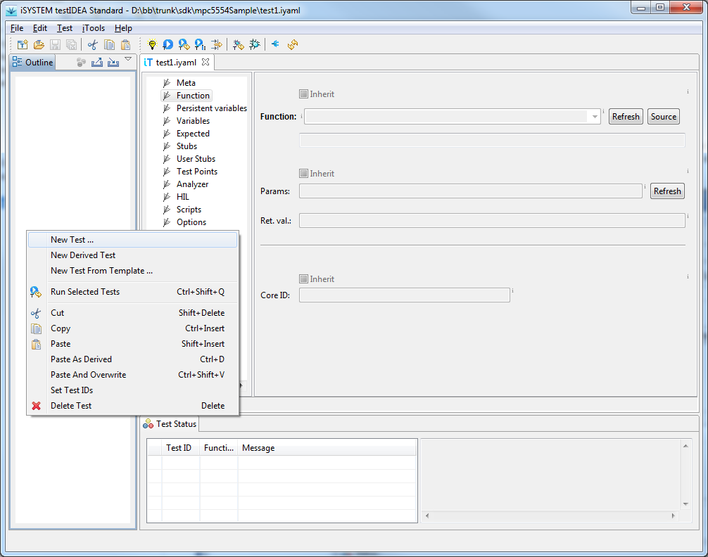
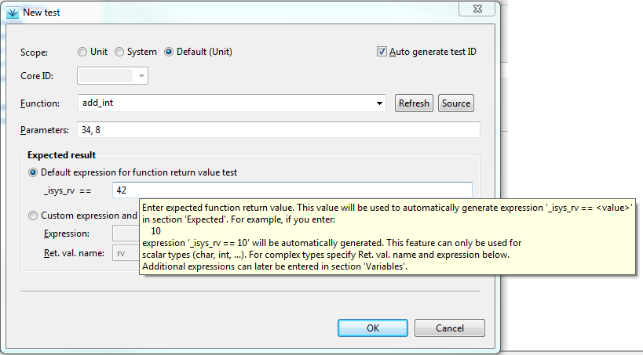

Test | Launch testIDEA.
If testIDEA proposes to create a default test specification
file, click OK.
Most controls on the the initial screen ot testIDEA are
grayed out, which means we can not enter any data until the first
test specification is created. We can create test specification
either with main menu option Test | New Test ... or
with option New test in the context menu of the
Outline view. Image below shows the initial screen of
iSYSTEM testIDEA with context menu of the Outline view:

When we select the option to create test specification, New test dialog opens. There we can enter the name of the function to be tested, its input parameters, verification expression and the name of the variable, which will store the function return value. Each input control has a tooltip, which explains its meaning. Example is shown below:
In Expected field we can enter any valid C expression, which contains test or target variables, registers, or I/O module input ports. Multiple expressions can be entered later in test specification editor, section Expected. When finished, click OK, and the test appears in the Outline view. In test specification editor we have access to all sections of iSYSTEM test case, but to keep this demo simple, we'll continue with running the test.